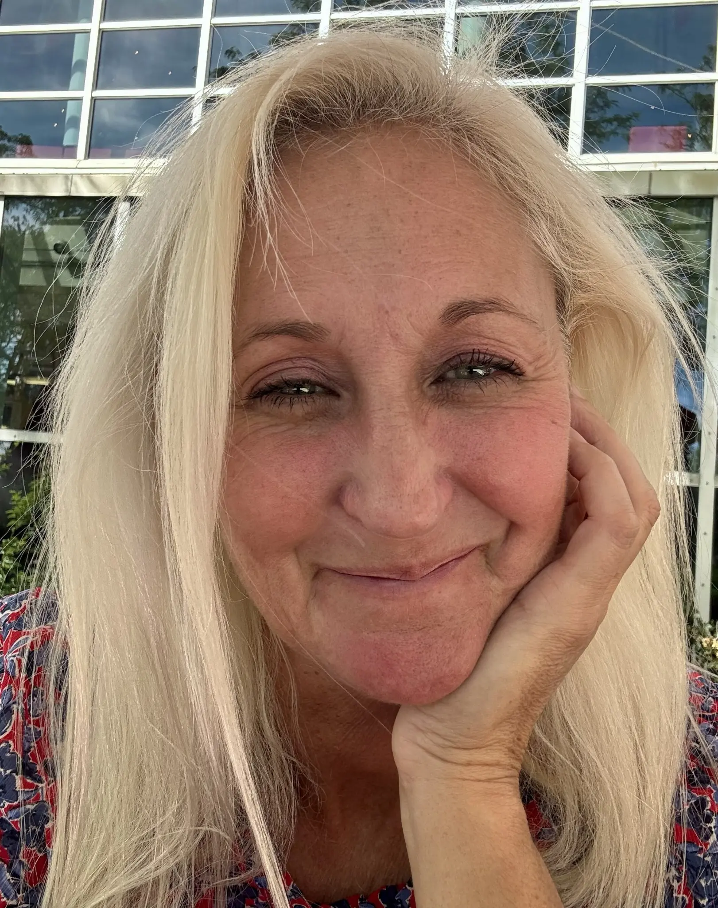

TEACHING PHILOSOPHY · SAM ANDRUS-HENRY
Humanagogy:
My Teaching Philosophy
“And so we come to the problem of communication: the opening of one's own truth and depth to the depth and truth of another in such a way as to establish an authentic community of existence.”
— Joseph Campbell
Learning is a process as diverse as my students are and should be made to fit their specific needs, experiences, abilities, and goals. True learning happens when students and teacher can meet in open, honest communication with one another, building a learning community in which each learns from the other. Students and teacher bring unique contributions to this community, empowering it to learn through choice and responsibility, risk and creativity, and support and feedback.
I believe students arrive with rich histories of learning, writing, reading, work, family, culture, and community. They do not begin when they enter our classrooms. Their knowledge, experiences, identities, and literacies have been shaped across time and continue to develop throughout their lives. As a teacher, my role is not simply to deliver information, but to create opportunities for students to connect knowledge with the experiences, questions, and purposes they already carry with them.
Learning in this type of environment happens through critical questioning and thinking, discovery, simulation, writing, reading, discussion, technology, media, and reflection. Whether teaching traditional-age students or adults returning to education after years away, I seek to recognize the strengths they bring while providing opportunities to extend, challenge, and deepen those strengths in meaningful ways.
My approach is grounded in the belief that growth is neither linear nor identical for all learners. Development often involves experimentation, uncertainty, revision, interruption, return, and renewed understanding. Learning communities should therefore make space for multiple pathways, varied experiences, and different ways of knowing while maintaining high expectations and meaningful support.
Ultimately, the goal of education is to make meaning and connections with ourselves and with others through information, knowledge, and experience. Learning should help students better understand who they are, how they came to be, and how they might participate thoughtfully and responsibly in the worlds they inhabit.
“Our deepest calling is to grow into our own authentic selfhood, whether or not it conforms to some image of who we ought to be. As we do so, we will not only find the joy that every human being seeks—we will also find our path of authentic service in the world.”
— Parker J. Palmer

Sam / Samantha Andrus-Henry
Writer · Educator · Maker
Self-portrait
Explore my teaching & learning practice →
Still crafting, still revising. This website continues to take shape, including word choice and sentence fluency. Thank you for making room for the process.